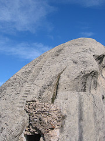
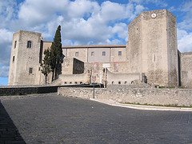
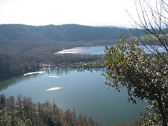
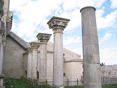
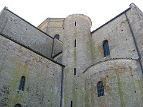
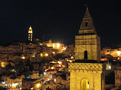
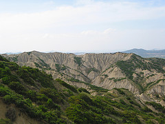

{% extends "base.html" %}
{% block title %}
Viaggiare in Basilicata
{% endblock %}
{% block body %}
In Basilicata con Trekking Italia
TRAVERSATA DELLA BASILICATA Partenza : 23- 30 Agosto 2008
Alla scoperta della Basilicata sconosciuta: Il Vulture, le Dolomiti Lucane, la Murgia Materana

VIAGGIARE IN BASILICATA
Viaggio nella terra dei LUCANI, SUD E MAGIA.
Sto lavorando alla progettazione di un tour, fatto di escursioni, visite a siti cultrali, momenti enogastronomici.
Chiunque sia interessato ci può contattare.
Queste sono solo alcune delle località che potrebbero essere "toccate" durante il Viaggio in Basilicata.
Le località indicate sono punti di riferimento. per ognuna di essa è possibile prevedere semplici visite o percorsi escursionistici più o meno lunghi adatti a tutti.
Ovviamente il Pollino non è escluso!
I testi le foto e i percorsi sono stati studiati dalla guida escursionistica
Giuseppe Cosenza, diffidate delle imitazioni!
Segnalateci alla vostra agenzia di viaggi di fiducia per programmare il vostro viaggio.

MELFI
Città passata alle cronache nazionali perché sede di un importante e modernissimo stabilimento FIAT. Di origini antichissime ha raggiunto il suo massimo splendore durante la dominazione Sveva: proprio qui Federico secondo ha emanato la sua “costituzione di Melfi” e si trasferiva in quest’area per praticare la sua attività sportiva preferita: la falconeria. Chiusa da mura medievali presenta nella parte più alta un imponente castello Normanno-Svevo che ospita uno dei più ricchi musei archeologici del meridione. Nel centro storico palazzi e chiese di notevole valore architettonico oltre alla casa che si ritiene sia stata abitata da Pier delle Vigne, consigliere di Federico II, poeta e, suicida, “ospite” dell’inferno di Dante.

MONTE VULTURE
Si tratta di una grande caldera, occupata al suo interno dai piccoli laghi di Monticchio. Le sue pendici sono coperti dalle coltivazioni di viti “Aglianico” per la produzione del rinomato “Aglianico del Vulture DOC” e da castagneti sia da legno che frutto “la marroncina”.
Dal punto di vista botanico presenta foreste caducifolgie a cerro, castagno e faggio con abbondanti rimboschimenti di varie specie non proprie di quest’ambiente, ma che nel caso dell’abete bianco hanno contribuito a creare un ambiente affascinante e selvaggio. La presenza faunistica più importante è la misteriosa Bramea europea: una farfalla unica nel mondo che sfarfalla di notte, in inverno, in un intervallo brevissimo di tempo, che ne rende unico ed eccezionale ogni avvistamento.
Storicamente il Vulture è stato interessato oltre che allo sfruttamento silvo-pastorale, anche come meta religiosa come testimoniano la presenza dei resti dell’abbazia di sant’Ippolito e l’imponente Abbazia di San Michele in fase di ristrutturazione.
Attualmente il Vulture è in parte tutelato come riserva naturale, ma è in attesa di istituzione un Parco Regionale, osteggiato da soprattutto da speculatori turistici.
Grazie proprio alla composizione vulcanica delle sue rocce numerosi sono le sorgenti di acqua minerale dal sapore acidulo ed effervescente naturale.

VENOSA
Venosa è una città, moderna e commerciale, ma con un grande Parco archeologico con i resti di città romana (anfiteatro, terme) medioevale (chiese protocristiane e castello) e la affascinante incompiuta: una chiesa mai terminata realizzata con materiale di risulta di epoca romane con iscrizioni latine, ebraiche e varie ornamentazioni.

ACERENZA
Città cattedrale, uno dei borghi più belli d’Italia. L’imponente cattedrale in stile romanico-cluniacense domina il borgo medioevale ottimamente conservato.
Attività

PARCO REGIONALE DI GALLIPOLI-COGNATO E DELLE DOLOMITI LUCANE
Le cosiddette “Dolomiti Lucane” sono un complesso montuoso areanaceo, che fanno parte del parco regionale “Gallipoli-Cognato e delle Dolomiti Lucane”. Nonostante le quote non superino i 1400 metri slm, si presentano con un orografia molto accidentata ricca di picchi e forre, ma rispetto alle Dolomiti p.d. sono anche delicatamente antropizzate, con i de paesi di Castelmezzano e Pietrapertosa incastonate a quota 750 e 1088 rispettivamente. Il primo dei due rientra nel circuito dei “Borghi più belli d’italia”, ma in modo complementare e speculare rappresentano entrambi una peculiarità urbanistica nel panorama lucano e forse nazionale. Il parco è coperto da ricche foreste di Cerro, faggio e altre caducifoglie. Interessante è la tradizionale festa del “Maggio”, il sacrificio annuale di un grosso albero, arcaica reminiscenza di un culto della fertilità tipico delle aree montuose. Da non perdere i Vicoli, la Rabatana (quartiere arabo) e le eccezionali statue lignee di Madonna col bambino conservate nella Chiesa Madre di Castelmezzano.

MATERA LA SPLENDENTE
Di Matera si può dire tanto…
I Sassi, le Chiese, il Falco Grillaio, la cucina, i concerti all'aperto, il clima, il cielo blu cobalto sono solo alcune cose che vi resteranno impresse nella mente.

I CALANCHI DEL MATERANO
La provincia di Matera, ma in parte anche quella potentina è caratterizzata nelle aree più aride ed esposte a sud da un paesaggio a “Calanchi”. Il terreno a causa di uno storico sfruttamento disboscamento, a pascolo, disboscamento unito attività pascolative fortemente eroso dalle piogge.
Parco letterario di Carlo Levi (Cristo si è fermato a Eboli) ad Aliano, escursione tra i calanchi.
A Tursi è possibile effettuare una escursione ad anello in parte in campagna (su sedimenti marini ricchi di fossili) e in parte nel centro storico e in particolare nella RABATANA, borgo di origine araba del X secolo.
Da qui si può raggiungere lo straordinario Santuario di Santa Maria d’Anglona dell’XI Secolo.
NON FINISCE QUA...
C'è Rivello, Trecchina, Maratea, il Sirino, la Val d'Agri...
Tutto ciò che può suscitarvi interesse viene postato sul
nostro book fotografico.
Viaggiate tra le nostre foto ma ricordate che la foto più bella e quella che farete voi.
{% endblock %}
{% block right %}
{% load call %}
{% call "prenota_visita.html" %}
{% endblock %}